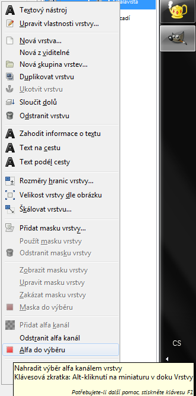
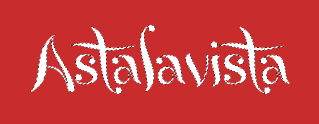
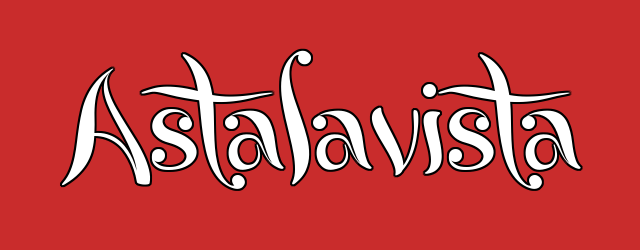

Web je již jen v režimu pro čtení a není možné přidávat nové komentáře nebo dotazy do fóra. Díky za přízeň.
Main menu
You are here
Výběry v Gimpu
4. August 2013 - 15:23 — Forseti
Výběry se používají téměř při každé práci v Gimpu.
Gimp umožňuje používat klávesové zkratky, budu je uvádět v závorce za názvem nástroje. Jakmile si na ně zvyknete, hodně zrychlí práci. Pokud by vám původní klávesové zkratky nevyhovovaly, jdou v nastavení změnit.
Gimp nabízí 7 základních nástrojů pro výběr:

 Výběr obdélníku (R) a Eliptický výběr (E)
Výběr obdélníku (R) a Eliptický výběr (E)
Tyto nástroje jsou svou funkčností velice podobné a netřeba je dále představovat - jejich funkce plyne z názvu. Je dobré zmínit, že klávesy CTRL a SHIFT (klávesy lze použít i současně), po započetí výběru, upravují jeho funkci:
- CTRL - Výběr se zvětšuje ze středu, nikoliv od levého horního rohu
- SHIFT - Výběr se rozšiřuje rovnoměrně v obou směrech - vhodné pro vytvoření čtvercového / kruhového výběru)
Výběry lze nastavit i ručně v panelu Volby nástroje (obvykle oblast pod panelem nástrojů). Speciálně pak u obdélníkového výběru můžeme nastavit zaoblení rohů.
 Volný výběr (F, Laso)
Volný výběr (F, Laso)
Tento nástroj je vhodný především pro vybírání hranatých objektů (klikáním), ale lze pomocí něj vybírat i jakékoliv jiné oblasti (tahem). Pro vytvoření výběru musí jeho hranice končit tam kde začíná. (vytvořit uzavřenou oblast)
 Přibližný výběr (U, Kouzelná hůlka) a Výběr dle barvy (SHIFT+O)
Přibližný výběr (U, Kouzelná hůlka) a Výběr dle barvy (SHIFT+O)
Tyto dva nástroje jsou opět velmi podobné. Oba provádí výběr na základě podobnosti barvy. Rozdíl mezi nimi je v tom, že:
- Přibližný výběr - vybírá spojité oblasti s podobnou barvou
- Výběr dle barvy - vybírá všechny oblasti s podobnou barvou
Míru podobnosti nastavíme pomocí možnosti Práh v panelu Volby nástroje. V tom samém panelu jde nastavit i podle jakého kritéria porovnávat podobnost barvy (složená barva, zastoupení červené / modré / zelené, odstín, sytost, jas).
 Výběr nůžkami (I)
Výběr nůžkami (I)
Tento nástroj funguje tak, že mu udáte pár kontrolních bodů na hranici výběru a on se pokusí automaticky najít hranu. Myšlenka je to sice dobrá, ale v praxi to není moc použitelné. Algoritmus není moc kvalitní a ne vždy určí tu správnou hranu.
 Výběr popředí
Výběr popředí
Toto je vcelku zajímavý nástroj. Funguje ve třech fázích:
- V prvním kroku je nutné vybrat oblast, ve které se bude budoucí výběr nacházet - stačí tak zhruba, nemusí být přesně
- Ve druhém kroku pak nástroj požaduje v dané oblasti vybrat barevný profil, podle kterého bude vytvářet výběr - stačí vybrat trochu. Následně se nám zobrazí odhadovaný výběr, který můžeme dále upravovat. (pomocí klávesy CTRL a tažení myši naopak odebíráme barvu z barevného profilu)
- Nakonec potvrdíme pomocí klávesy ENTER
Stejně jako u předchozích nástrojů, můžeme i tento trochu poladit v panelu Volby nástroje.
Toť by bylo k základním nástrojům pro výběr asi vše. Gimp však nabízí i jiné možnosti vytváření výběrů.
 Výběr pomocí Cesty (B)
Výběr pomocí Cesty (B)
I když umí nástroj Cesta i vykreslovat čáru, umožňuje zároveň i velice přesně pomocí Bézierovy křivky definovat výběr.
- Nejdříve pomocí cesty nadefinujeme hranici výběru.
- Poté v panelu Volby nástroje klikneme na tlačítko Výběr z cesty
Výběr pomocí Rychlé masky (SHIFT+Q)

Další celkem zajímavou možností jak v Gimpu vytvořit výběr je pomocí tzv. rychlé masky. Funguje podobně jako normální maska - pomocí černobílé mapy určuje, která část bude vybraná a která ne. Masku vytváříme pomocí kreslících nástrojů (Štětec, Mísení = barevný přechod, Rozmazání, ...)
Poznámka: Při vytváření masky můžou nastat 3 situace:
- Černá barva - není vybráno
- Bílá barva - je vybráno
- Něco mezi - tady to začíná být zajímavé. Asi bude lepší to ukázat na příkladu:
Pokud udělám tuto masku pomocí přechodu

Zobrazí se přechod sice trochu podivně (nicméně dává to smysl)

Když nyní vyzkouším invertovat barvy ve výběru, vznikne toto

Je tedy vidět, že čím je na masce barva světlejší, tím má výběr větší vliv.
Rychlou masku si můžeme zobrazit v černobílé podobě v Editoru výběrů (hormí menu: Okna > Dokovatelná dialogová okna > Editor výběru)
Jelikož je rychlá maska vlastně černobílý obrázek, můžeme s ní dělat různé psí kusy - použít filtry, klonovat, rozmáznout, ...
Když už máme výběr hotový, můžeme s ním dále pracovat. Pokud jste si všimli u základních nástrojů pro tvorbu výběru, úplně nahoře v panelu Volby nástroje je skupina tlačítek udávajících režim tvorby výběru:

Tento režim můžeme také ovládat pomocí podržení klávesových zkratek při tvorbě výběru:
- Nahrazení aktuálního výběru - žádná zkratka
- Přidat k aktuálnímu výběru - podržením SHIFT
- Ubrat z aktuálního výběru - podržením CTRL
- Průnik s aktuálním výběrem - podržením CTRL+SHIFT
V některých situacích se může hodit, že potřebujeme vybrat vše co není průhledné a právě od toho je nástroj Alfa do výběru. Uvedu konkrétní případ. V Gimpu je trošku složitější situace (než je tomu u Photoshopu) pokud je třeba pracovat s textem a proto se musí využívat různé fígle. Vemme si například text s okrajem (Outlined text). V Gimpu máme v podstatě 2 možnosti:
- Najít si nějaký plugin, který toto řeší (např. Outlined text) a spokojit se s tím co nabízí
- Udělat to ručně a využít flexibilitu tohoto řešení
Právě u toho 2. příkladu využijeme nástroj Alfa do Výběru:
- Vytvoříme si nový obrázek a vložíme nějaký text (barvy nechám na Vás)

- Nyní na textové vrstvě klikneme pravým tlačítkem a vybereme Alfa do výběru

a vznikne nám výběr textu

- Tento výběr zvětšíme o požadovanou šířku okraje (horní menu: Vybrat > Zvětšit)

- Vytvoříme novou vrstvu (horní menu: Vrstvy > Nová vrstva) a posuneme ji (ve správci vrstev) pod vrstvu s textem
- Na této nově vytvořené vrstvě vyplníme (horní menu: Upravit > Vyplnit barvou popředí) vytvořený výběr

Výběr můžeme zmenšit: horní menu: Vybrat > Zmenšit
nebo jej můžeme zvětšit: horní menu: Vybrat > Zvětšit
nebo můžeme vytvořit výběr z okraje aktuálního výběru: horní menu: Vybrat > Okraj
Pokud bychom potřebovali v Gimpu výběr z jakéhokoliv důvodu uložit, existují zde nejméně 2 možnosti:
- Uložení pomocí cesty: horní menu: Vybrat > Na cestu
Pokud potřebujeme uložit pouze jednoduchý výběr, který je tvořen pouze hranicí a uvnitř ohraničeného pole má všude stejný vliv Uložíme výběr pomocí cesty. Tuto cestu si pak můžeme libovolně pojmenovat, popř. upravit. Výběr opětovně vyvoláme pravým kliknutím na danou cestu a jednou z nabídek (Cesta do výběru / Přidat do výběru / Ubrat z výběru / Průnik s výběrem) provedeme požadovanou operaci. - Uložení do kanálu: horní menu: Vybrat > Uložit do kanálu
Pokud potřebujeme uložit složitější výběr (vytvořený například pomocí rychlé masky), který nemá všude stejný vliv (jak je znázorněno na příkladu), použijeme nástroj Uložit do kanálu. Ukládáme tak pomocí černobílé reprezentace vlastně onu rychlou masku. Výběr opětovně vyvoláme pravým kliknutím na daný kanál (kanály zobrazíme - horní menu: Okna > Dokovatelná dialogová okna -> Kanály) a jednou z nabídek (Kanál do výběru / Přidat do výběru / Ubrat z výběru / Průnik s výběrem) provedeme požadovanou operaci.
To by bylo k výběrům z mojí strany vše. Pokud máte nějaké dotazy, či nejasnosti, klidně se ptejte.
Forseti
Zdroj:
žádný
Kategorie:
Web je již ukončen. Nebude zde přibývat žádný nový obsah. Případné dotazy prosím na l.bacovsky(a)outlook.cz
Add new comment